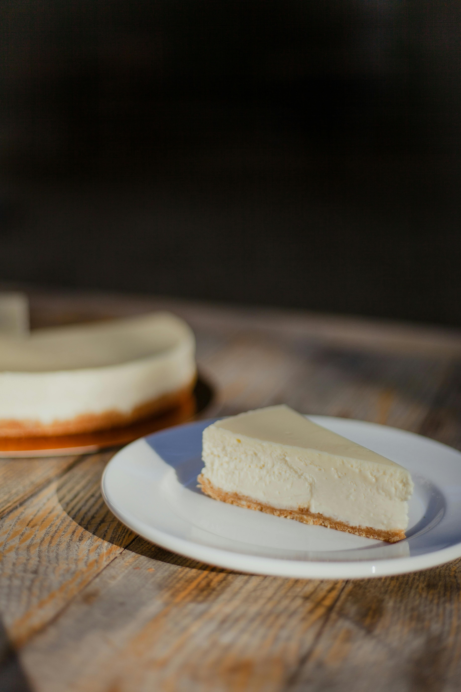

Cheesecake

Description
This is as quick and easy as cheesecake recipes get, using cookies and graham crackers for a crust and a simple creamy filling for a great no-bake cheesecake.
Ingredients
- ¾ cup finely ground graham cracker crumbs
- ¾ cup pecan sandies cookies
- 3 tablespoons butter
- 3 tablespoons white sugar
- 8 ounces cream cheese
- ⅓ cup white sugar
- 2 tablespoons lemon juice
- ½ cup heavy whipping cream, whipped
- ½ cup sliced fresh strawberries (Optional)
Steps
Step 1
- Gather all ingredients.
Step 2
- Mix crushed cookies, graham crackers, melted butter, and 3 tablespoons sugar together in a medium bowl.
Step 3
- Press into a 7-inch springform pan. Place in the refrigerator until ready to use.
Step 4
- Beat cream cheese, 1/3 cup of sugar, and lemon juice together in a large bowl.
Step 5
- Whip cream, and fold into cream cheese mixture.
Step 6
- Spread into pan.
Step 7
- Top with sliced strawberries (if using). Freeze for 1 hour, covered with foil.
Step 8
- Place in refrigerator 30 minutes before serving.
Home